СОЗДАТЬ НЕБОЛЬШУЮ ИНФОРМАЦИОННУЮ СИСТЕМУ ДЛЯ РЕГИСТРАЦИИ
ПРОДАЖ В СТУДЕНЧЕСКОМ КИОСКЕ
Сложность: *
Теги: документ, регистр накопления, справочник, обработка проведения, набор записей
ЗАДАНИЕ
Заказчик просит создать небольшую информационную систему для регистрации продаж в студенческом киоске.
1. В киоске продают канцелярские принадлежности, литературу и булочки. Нужно отобразить только факт продажи товаров в киоске.
2. В результате выполнения лабораторной работы должен получиться отчет вида:
|
Товар |
Продано |
|
Пончик |
3 |
|
… |
… |
q Создать новую информационную базу.
q Открыть информационную базу в режиме «Конфигуратор».
q Открыть окно конфигурации.
Подробнее о том, как это сделать, смотрите в Лабораторной работе № 2 (стр. 17).
Проанализируем задачу и примем решение, что нам нужен справочник.
Определение
Справочник – это объект конфигурации, который хранит справочную информацию, например, перечень товаров или список сотрудников (более подробно про справочники можно прочитать здесь: https://v8.1c.ru/platforma/spravochniki/).
В данном справочнике будет храниться перечень товаров, продаваемых в киоске.
Создадим новый справочник «Товары».
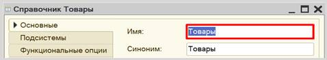
Откроем справочник в режиме «1С:Предприятие» и добавим несколько товаров, например, «Ручка», «Линейка», «Пончик».
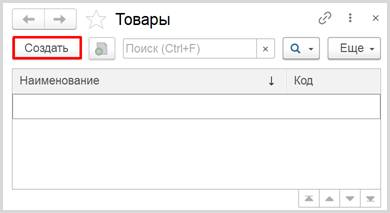
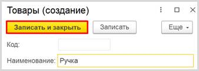
Обратите внимание, что поля «Код» и «Наименование» система сгенерировала самостоятельно при добавлении нового справочника. Эти поля являются стандартными реквизитами. Стандартные реквизиты платформа создает автоматически, исходя из свойств конкретного объекта конфигурации. Поле «Код» заполнять не нужно, система сделает это автоматически. Поле «Наименование» является обязательным для заполнения.
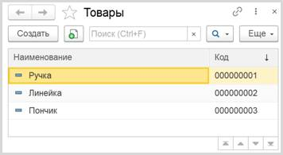
Создав справочник, мы организовали хранение объектов аналитики. Далее следует ответить на вопрос: «Как мы будем регистрировать продажи?».
Для данной цели подойдет объект конфигурации документ.
Определение
Документ – это объект конфигурации, хранящий информацию о каких-либо событиях, произошедших в «жизни» предприятия. Например, с помощью документа можно зарегистрировать (то есть сохранить данные документа для последующей обработки) продажу товаров или начисление зарплаты (подробнее про документы можно прочитать здесь: https://v8.1c.ru/platforma/dokumenty/).
Добавим
новый документ «Продажа».
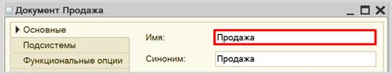
Вот так данный документ будет выглядеть в режиме «1С:Предприятие»:
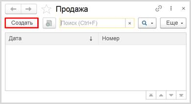
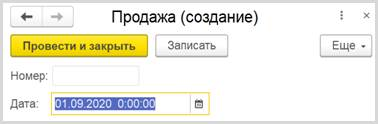
Любой документ может находиться в одном из двух состояний: подготовленный к свершению или совершенный:
q чтобы подготовить документ для использования в будущем, необходимо его записать;
q чтобы отметить документ как совершенный – провести.
Поля «Номер» и «Дата» система создала автоматически при добавлении нового документа. Это стандартные реквизиты документа. Ознакомиться с перечнем всех стандартных реквизитов можно на вкладке «Данные» окна редактирования документа.
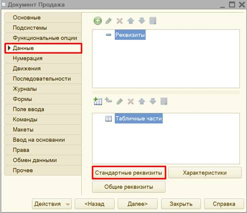
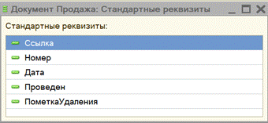
Стоит обратить внимание на ключевой стандартный реквизит «Дата». Он будет хранить время регистрации продажи. Дополнительно создавать реквизит «Дата» нам не нужно, система уже позаботилась об этом.
Далее следует определиться со структурой документа. Мы хотим, чтобы в одном документе можно было регистрировать продажу сразу нескольких товаров. В этом нам поможет табличная часть документа.
Создадим табличную часть. Для этого воспользуемся кнопкой «Добавить табличную часть».
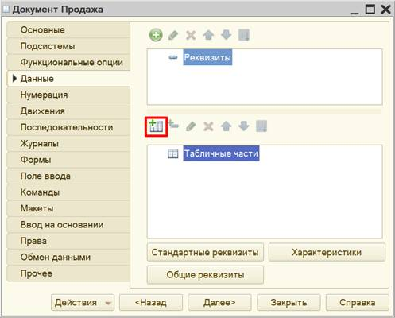
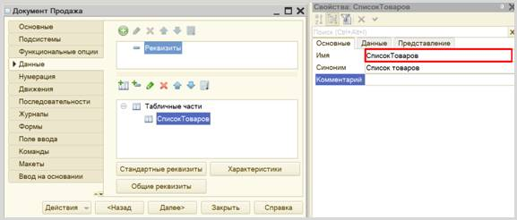
Далее нужно добавить реквизиты табличной части – колонки таблицы. Для поставленной задачи создайте колонки «Товар» и «Количество». Для добавления реквизита воспользуйтесь кнопкой «Добавить реквизит».
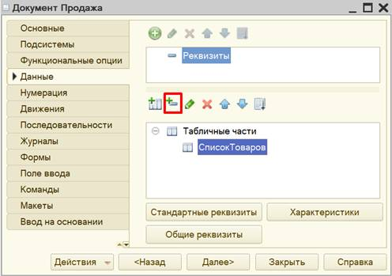
Для каждого из реквизитов нужно определить имя и тип данных:
q реквизит «Товар» должен иметь тип «СправочникСсылка.Товары», чтобы хранить ссылку на элемент справочника «Товары»;
q реквизит «Количество» должен быть числовым.
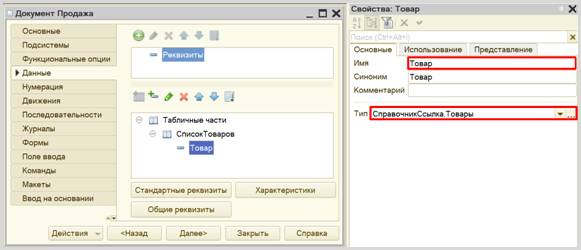
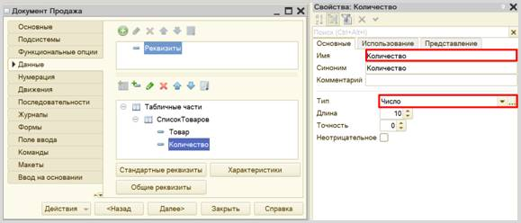
Проверим работу системы. Создадим документ и добавим в него несколько товаров.
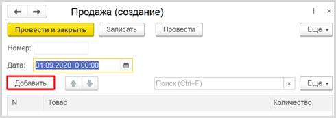
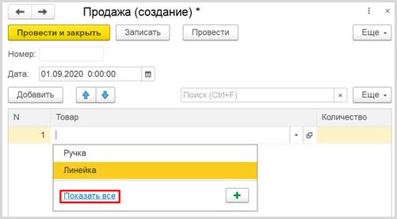
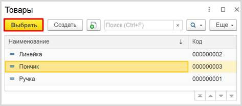
Аналогично нужно добавить еще несколько товаров, а также указать их количество.
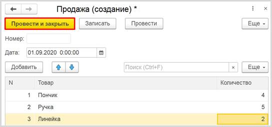
Можно ли теперь на основе таких документов построить отчет по продажам? Можно, но для этого придется прибегнуть к грубому перебору всех существующих документов. Данный вариант является неправильным, потому что, если таких документов окажется очень много, система будет требовать большого количества ресурсов и времени.
Для решения данной проблемы и ускорения процесса извлечения данных создадим еще один объект – регистр накопления.
Определение
Регистр накопления – это такая итоговая таблица, которая может автоматически считать какие-либо элементы, например, денежные средства, материалы (дополнительно про регистры накопления можно прочитать здесь: https://v8.1c.ru/platforma/registr-nakopleniya/).
Данный регистр должен быть оборотным, чтобы накапливать данные о продаже товаров.
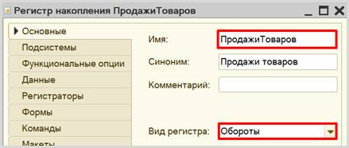
Переходим к описанию структуры регистра накопления. Для этого переходим на вкладку «Данные».
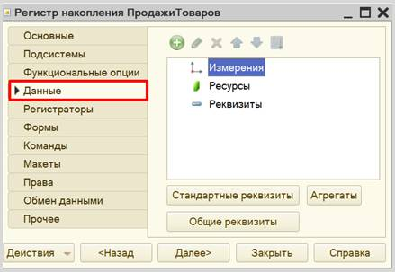
Заполнение данного окна всегда проще всего начинать с добавления ресурса. Чтобы понять, что использовать в качестве ресурса, необходимо задать вопрос: «Что нам нужно считать?». Нам нужно считать количество. Следовательно, количество и будет являться ресурсом. Тип данного реквизита – «Число».
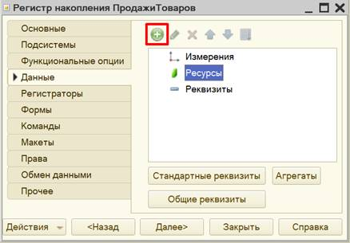
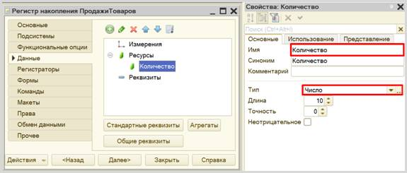
Чтобы разобраться с измерением, нужно понять, в разрезе чего мы хотим считать количество. Мы хотим считать количество (чего?) товаров. Значит, в качестве измерения следует добавить реквизит «Товар». Тип данного реквизита – «СправочникСсылка.Товары».
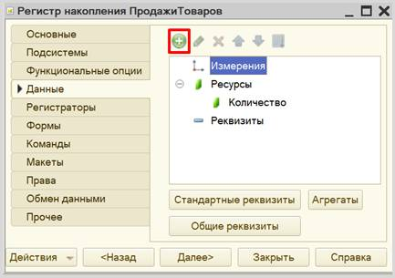
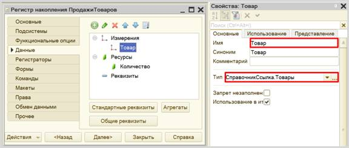
Чтобы регистр накопления заработал, нужно сделать следующее:
1. Определить источники данных, которые должны попадать в регистр (определить документы-регистраторы).
2. Описать, каким образом данные из документа-регистратора должны попадать в регистр.
В нашем случае, данные в регистр накопления должны попадать из
документа «Продажа», следовательно, данный документ и будет являться
регистратором.
Для определения регистратора регистра накопления необходимо выбрать
нужный документ на вкладке «Регистраторы».
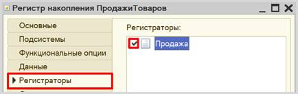
Чтобы определить правила передачи данных из регистратора в регистр накопления, откроем вкладку «Движения» окна редактирования документа «Продажа» и воспользуемся конструктором движений.
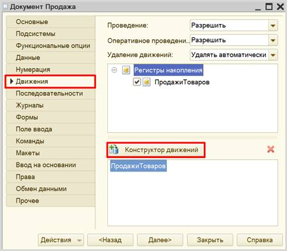
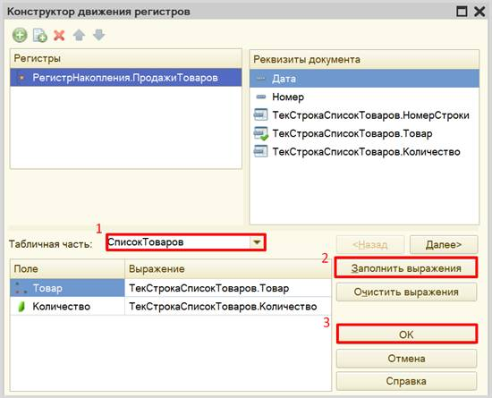
Окно конструктора движений состоит из нескольких областей:
q Левая верхняя область позволяет переключаться между регистрами (один документ может делать движения сразу в несколько разных регистров).
q Правая верхняя область описывает реквизиты документа-регистратора. Чтобы отобразить в данной области реквизиты табличной части нужно выбрать ее в соответствующем поле.
q В нижней части окна описаны реквизиты регистра накопления. Нужно заполнить поле «Выражение» реквизитами документа.
Если все было сделано правильно, имена и типы реквизитов совпадают, то при нажатии на кнопку «Заполнить выражения» реквизиты регистра заполнятся автоматически. Если этого не произошло, то заполните поле «Выражение» вручную, путем выбора соответствующих реквизитов документа.
При нажатии на кнопку «ОК» система сформирует программный код, который при успешном проведении документа произведет движения в регистр накопления, то есть скопирует данные из документа в регистр накопления.
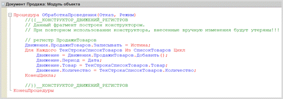
Проверим работу регистра накопления. В первую очередь, необходимо перепровести (провести заново) созданный нами ранее документ, чтобы он сформировал движение в регистр накопления.
Чтобы посмотреть на движения в регистре накопления воспользуемся функциями для технического специалиста:
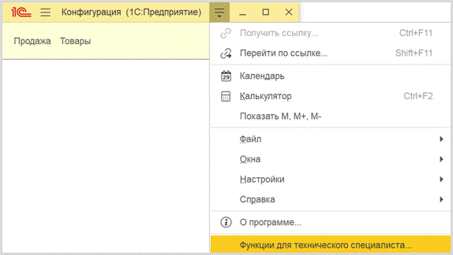
Найдем наш регистр, откроем его и посмотрим на движения.
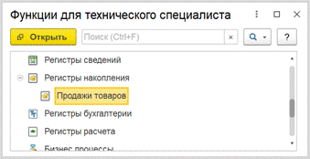
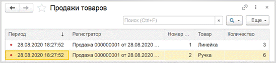
Таким образом, регистр накопления является своеобразной итоговой таблицей, куда заносятся данные из документа «Продажа».
Теперь можно строить отчет.
Определение
Отчет – это такой объект конфигурации, который формирует данные в понятном для пользователя виде, например, в виде таблицы или диаграммы (подробнее про отчеты можно прочитать здесь: https://v8.1c.ru/platforma/otchet/).
Создадим новый отчет «ОтчетПоПродажам». Для наполнения отчета воспользуемся конструктором схемы компоновки данных.
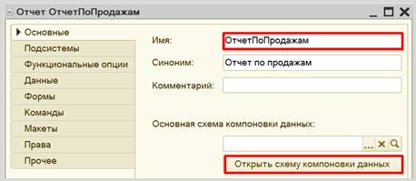
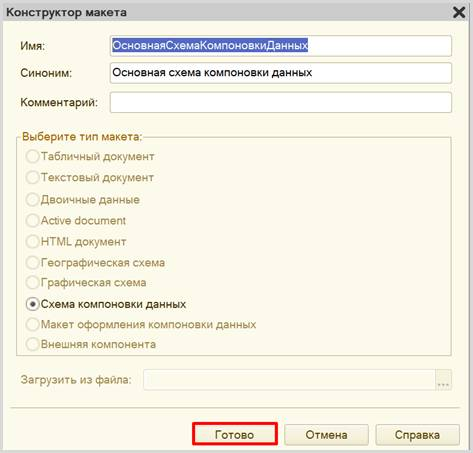
Все созданные нами объекты конфигурации представляют собой таблицы базы данных. В режиме «1С:Предприятие» мы заполняем эти таблицы данными.
Чтобы получить эти данные для отображения в отчете, нужно сформировать запрос к базе данных.
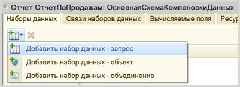
Воспользуемся конструктором запроса.
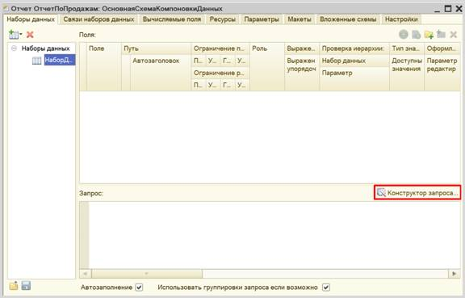
Открывшееся окно имеет три части:
q Часть слева отображает все объекты конфигурации, имеющиеся в нашей базе данных. Нужно выбрать лишь те объекты, из которых мы хотим получать данные.
q Посередине находятся таблицы – это выбранные нами объекты, откуда мы хотим получать данные для конкретного отчета.
q Справа поля – это те значения (поля), которые мы хотим увидеть в отчете.
Данные будем брать не из регистра накоплений напрямую, а из виртуальной таблицы, которую создает этот регистр автоматически. Эта виртуальная таблица позволит получить уже просуммированные значения по всем документам.
Чтобы перенести данные из одного окна в другое, просто перетащите
нужные поля с помощью мыши либо воспользуйтесь стрелочками, расположенными
между окнами.
В результате данное окно должно быть заполнено следующим образом:
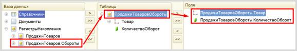
Запрос к базе данных сформирован. Теперь необходимо настроить внешний вид отчета. Для этого нужно перейти на вкладку «Настройки».
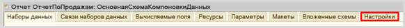
Для настройки внешнего вида отчета воспользуемся конструктором настроек отчета.
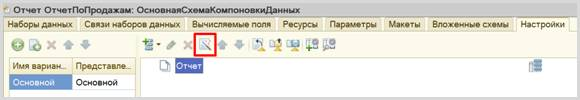
Наш отчет будет иметь форму списка.
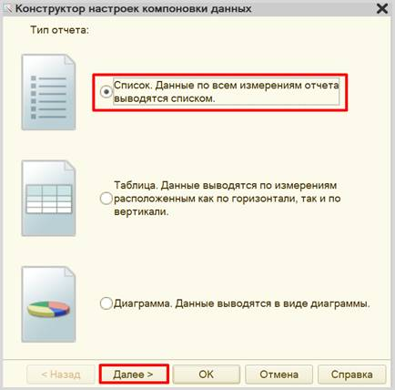
Далее нужно выбрать поля, которые будут отображены в отчете.
Обратите внимание на порядок полей в правом столбце, именно в таком порядке они будут отображены в отчете.
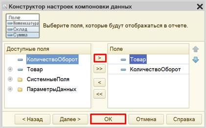
Чтобы удостовериться, что отчет работает корректно, можно создать, наполнить и провести еще несколько документов «Продажа», а затем посмотреть на результаты в отчете. Если вы все сделали верно, то товары, указанные в документах, должны быть просуммированы.
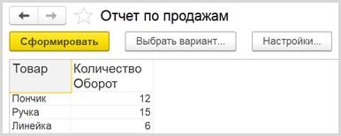
Поставленная задача решена.